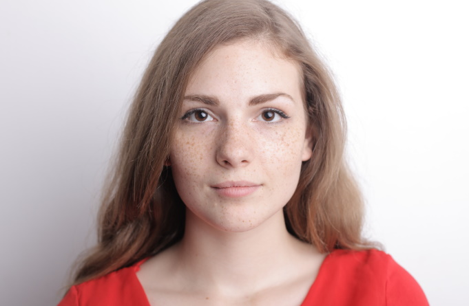

WebNN Face Detection
Face detection inference via WebNN with CPU / GPU / NPU device selection
Device:
CPU
GPU
NPU
Detector:
Detector v1 (ONNX, 95 ops)
Detector v2 (TFLite, 164 ops)
YOLOv8n-Face (640×640, 5 kpts)
Choose Image
DFL Graph
Face Landmarks
LM v1 (192×192, 468 pts)
LM v2 (256×256, 478 pts)
Run Detection
Ready. Select a device and click Run Detection.

Preprocessing Debug — Letterbox Preview
Results